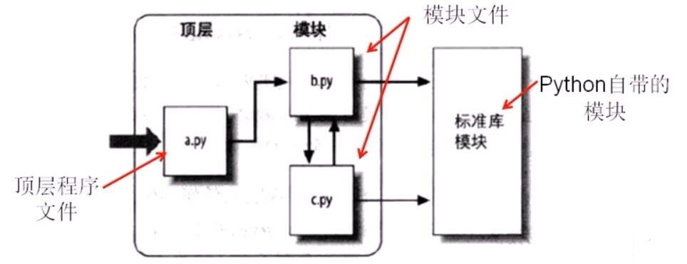
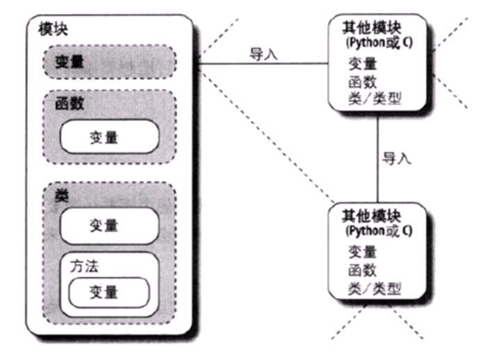
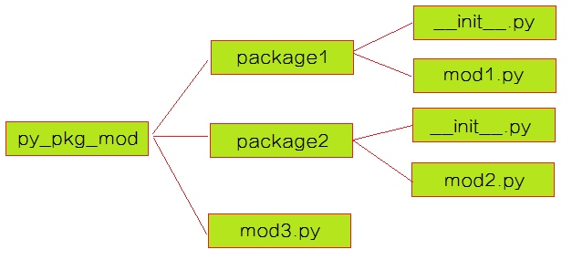
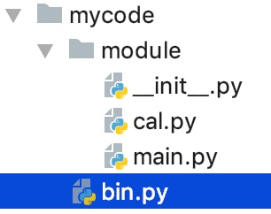

模块与包
1 模块
1.1 模块的概念
在计算机程序的开发过程中，随着程序代码越写越多，在一个文件里代码就会越来越长，越来越不容易维护
为了编写可维护的代码，我们把很多函数分组，分别放到不同的文件里，这样，每个文件包含的代码就相对较少，很多编程语言都采用这种组织代码的方式。在Python中，一个.py文件就称之为一个模块（Module）
使用模块有什么好处？
最大的好处是大大提高了代码的可维护性
其次，编写代码不必从零开始。当一个模块编写完毕，就可以被其他地方引用。我们在编写程序的时候，也经常引用其他模块，包括Python内置的模块和来自第三方的模块。
1.2 模块分类
Python 的模块可分为内置模块、自定义模块和第三方模块三类
- 内置模块(又称Python标准库)：Python中本来就有的模块
- 自定义模块：自己开发的模块
- 第三方模块：需要单独下载、安装并导入的模块
另外，使用模块还可以避免函数名和变量名冲突。相同名字的函数和变量完全可以分别存在不同的模块中，因此，我们自己在编写模块时，不必考虑名字会与其他模块冲突。但是也要注意，尽量不要与内置函数名字冲突
1.3 Python程序结构
一个python程序通常包括一个顶层程序文件和其它的模块文件（0个、1个或多个）
- 顶层文件：包含了程序的主要控制流程
- 模块文件：为顶层文件或其它模块提供各种功能性组件
- 模块首次导入（或重载）时，python会立即执行模块文件的顶层程序代码（不在函数内的代码）
- 而位于函数主体内的代码直到函数被调用后才会执行

可以使用help('modules')来查看系统中有哪些python的标准库模块
模块的执行环境：
模块是被导入的，但模块也可以导入和使用其它模块，这些模块可以用python或其它编程语言写成
模块可内含变量、函数以及类来进行其工作，而函数和类可以包含变量和其它元素

1.4 模块的导入
导入方法一：import
import module1[, module2[,... moduleN]
当模块名非常长的时候我们可以对其建立一个别名，在调用其内部的函数时可直接用别名来调用
import a as b # a表示要导入的名字超长的模块，b是将a重命名后的名称 \
# 即，将模块a导入，并将其重命名为b
一旦使用了别名，则仅能使用别名进行调用
当我们使用import语句的时候，Python解释器是怎样找到对应的文件的呢？答案就是解释器有自己的搜索路径，存在sys.path里
import sys
print(sys.path)
把当前文件所在目录加入搜索路径中
import sys,os
BASE_DIR=os.path.dirname(os.path.abspath(__file__))
sys.path.append(BASE_DIR)
导入方法二：from ... import ...
from modulename import name1[, name2[, ... nameN]]
这个声明不会把整个modulename模块导入到当前的命名空间中，只会将它里面的name1或name2方法单个引入到执行这个声明的模块的命名空间中
导入方法三：from ... import *
from modulename import *
这提供了一个简单的方法来导入一个模块中的所有项目。然而这种声明不该被过多地使用。大多数情况， Python程序员不使用这种方法，因为引入的其它来源的命名，很可能会覆盖已有的定义，且被导入进来的函数功能大多数是用不上的
导入方法四：动态导入
当我们知道模块的名称和路径，但是是以字符串的形式存在的，此时无法通过import语句直接导入,这时我们就能以动态导入模块的方式导入该模块
modname = 'lib.fib'
__import__(modname)
还可以使用以下官方推荐的方式动态导入模块，与上面的__import__(modname)效果一致
import importlib
importlib.import_module(modname)
1.5 模块的工作机制
import语句导入指定的模块时会执行三个步骤：
- 找到模块文件
- 在指定的路径下搜索模块文件(sys.path)
- 编译成字节码
- 文件导入时就会编译，因此，顶层文件的.pyc字节码文件在内部使用后会被丢弃
- 只有被导入的文件才会留下.pyc文件
- 执行模块的代码来创建其所定义的对象
- 模块文件中的所有语句会依次执行，从头至尾
- 而此步骤中任何对变量名的赋值运算，都会产生所得到的模块文件的属性
注意：模块只在第一次导入时才会执行如上步骤：
- 后续的导入操作只不过是提取内存中已加载的模块对象
- reload()可用于重新加载模块
1.6 模块的顶层执行及被导入
一个模块文件可以同时支持顶层执行（作为顶层文件）或被导入（作为模块文件）。
- 每个模块都有个名为__name__的内置属性，python会自动设置该属性：
- 如果文件是以顶层程序文件执行，在启动时，__name__的值为"__main__"
- 如果是被导入，则__name__的值为模块名
- 可以在模块文件中检测自己的__name__属性，以之实现在执行时运行指定的代码，常用于模块的自我测试
def testFunc():
print "Hello world"
if __name__ == "__main__": # 直接执行此程序文件时才执行testFunc函数，\
testFunc() # 被首次导入时亦会执行此函数，但之后将不会执行
Python 程序中，每个代码文件在可以独立运行的同时，也可作为一个模块文件被其它模块调用。编写模块文件的好习惯是，在编写该模块提供的函数或类的同时，也可把自身当作独立运行的文件来为自身模块做单元测试。这就需要借助模块名字属性的可变特性来实现了
例如：可在模块的最下面加入名字的判断，并执行单元测试代码
if __name__ == '__main__':
执行单元测试代码
如此一来，当直接运行这个模块文件时，可通过测试代码来检验所定义的函数的输入和输出是否正确。而引入模块时，测试代码不会被执行。
2 包
如果我们开发了一系列的模块给别人使用，而这些模块是有关联性的，如果照前面说的，要设置模块搜索路径，然后将这一系列的模块放进去，这样就会很麻烦，于是就有了包的概念。
包用于将一组模块归并到一个目录中，此目录即为包，目录名即为包名。
包是一个有层次的文件目录结构，它定义了一个由模块和子包组成的python应用程序执行环境
基于包，python在执行模块导入时可以指定模块的导入路径，如
import dir1.dir2.mod1

要使用如图所示的package1，则py_pkg_mod容器必须要在模块搜索路径中。使用以下命令导入
import package1.mod1
包导入语句的路径内的每个目录内都必须有__init__.py文件：
- __init__.py可包含python代码，但通常为空；
- 仅用于扮演包初始化的挂钩、替目录产生模块命名空间以及使用目录导入时实现from *行为的角色

##-------------cal.py
def add(x,y):
return x+y
##-------------main.py
from module import cal
def main():
a = cal.add(1, 2)
return a
##--------------bin.py
from module import main
a = main.main()
print(a)